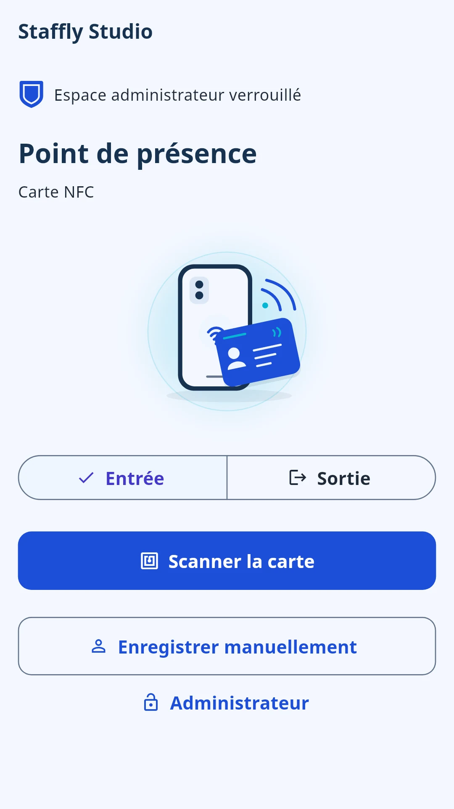
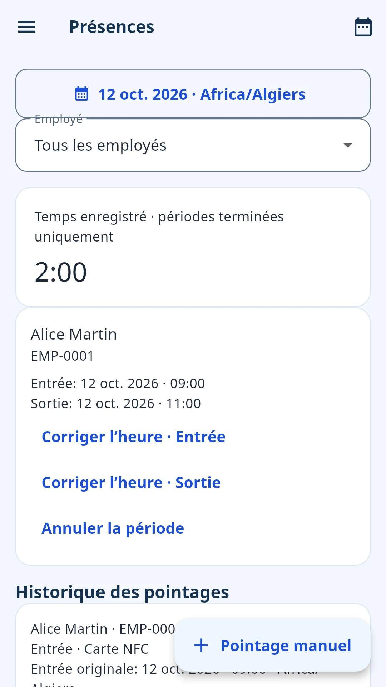
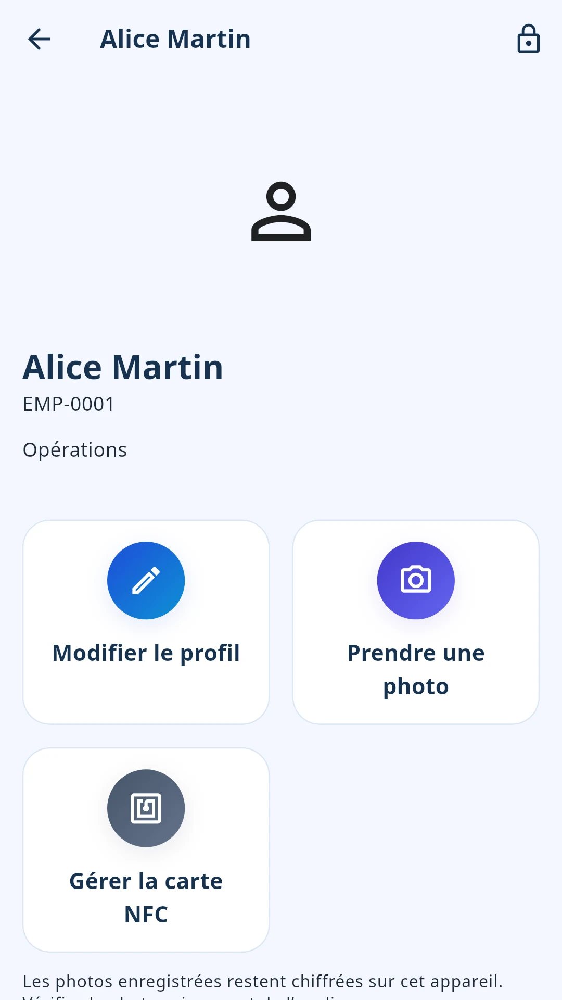

Simplifiez la présence au quotidien
Du premier pointage à la dernière pause, suivez facilement la journée de travail.
Gérez le personnel, la présence, les congés et la paie brute depuis un seul appareil partagé sur le lieu de travail, même sans connexion internet.


Du premier pointage à la dernière pause, suivez facilement la journée de travail.
Personnel, horaires et congés : tout à sa place, sur un seul appareil partagé.
Transformez les données du quotidien en exports clairs, paie brute et documents utiles.
Une gestion du personnel pratique, sans infrastructure compliquée.
Rassemblez les informations utiles pour vous concentrer sur les personnes qui font vivre votre entreprise.

Un pointage simple pour mieux comprendre la journée. Utilisez des cartes NFC compatibles ou la saisie manuelle.
Planifiez les horaires hebdomadaires et les affectations, avec des exceptions si vos besoins évoluent.
Regroupez décisions, calendriers et soldes de congés, avec la souplesse nécessaire à votre activité.
Préparez les salaires bruts à partir de tarifs horaires, journaliers ou mensuels et consignez les paiements déjà effectués.
Exportez vos données lorsque vous souhaitez les vérifier, les enregistrer ou les partager.
Configurez votre lieu de travail une seule fois. Gardez l’essentiel à portée de main.
Choisissez les informations de l’entreprise, la langue, la devise et le fuseau horaire.
Ajoutez vos employés et choisissez les cartes NFC ou les pointages manuels.
Vérifiez la présence, gérez les congés et exportez vos rapports.
Un accès personnel facultatif pour consulter son temps de travail, pas les données des collègues.
Actualisez vos données près de l’appareil du lieu de travail via Bluetooth et Wi-Fi. Aucun routeur n’est nécessaire. Les dernières données téléchargées restent ensuite disponibles.
Une protection pratique et un contrôle local, sans dépendre d’internet pour chaque journée de travail.
Authentification compatible de l’appareil ou code PIN Staffly.
Les données et photos du personnel sont chiffrées sur l’appareil.
Vous gérez vos sauvegardes protégées par mot de passe.
Des exports lisibles que vous choisissez d’enregistrer ou de partager.
La gestion RH fonctionne hors ligne. Publicités, achats et vérification des abonnements nécessitent internet.
Toutes les fonctions RH sont incluses. Pro supprime simplement les publicités.
Les modalités de facturation et de renouvellement sont affichées avant l’achat.
Les détails pratiques, avant de commencer.
Oui. La gestion RH fonctionne hors ligne. Les publicités, les achats et la vérification des abonnements nécessitent internet.
Non. Un seul téléphone ou une tablette Android partagé sur le lieu de travail permet les pointages. L’Accès employé personnel est facultatif et prévu dans la prochaine version.
Non. Les pointages peuvent être saisis manuellement. Les cartes NFC compatibles offrent une autre option si l’appareil partagé prend en charge le NFC.
Oui. La présence, les congés, les horaires et la paie peuvent être exportés vers Excel. Certains exports CSV et une bibliothèque de documents générés sont également disponibles.
Non. Staffly calcule les salaires bruts et consigne les paiements déjà effectués. Il ne calcule pas les taxes ou cotisations légales et ne transfère pas d’argent.
Les données et photos du personnel sont conservées dans le stockage local chiffré de l’application sur l’appareil partagé. Vous contrôlez les sauvegardes protégées par mot de passe et les exports lisibles à enregistrer ou partager.
Non. L’Accès employé est préparé pour la prochaine version Android. L’actualisation des données autorisées nécessite d’être près de l’appareil partagé et utilise Bluetooth et Wi-Fi. Les données déjà téléchargées peuvent être lues ensuite hors ligne.
Android est la plateforme actuellement mise en avant. Aucune date de sortie sur iPhone n’est confirmée.
Staffly Pro propose les mêmes fonctionnalités RH, sans publicité. Les abonnements mensuels ou annuels, les prix et les modalités de facturation et de renouvellement sont affichés dans l’application avant l’achat.
Une journée mieux organisée commence avec Staffly.
Obtenir Staffly sur Google PlayDisponible sur Android